Zevoa
Groceries. Travel. Package delivery. Pay anywhere. Transportation. Zevoa is a super-app concept that reunites everyday errands into one mobile shopping experience, built around a better product UX and a structured, clearly documented design process.
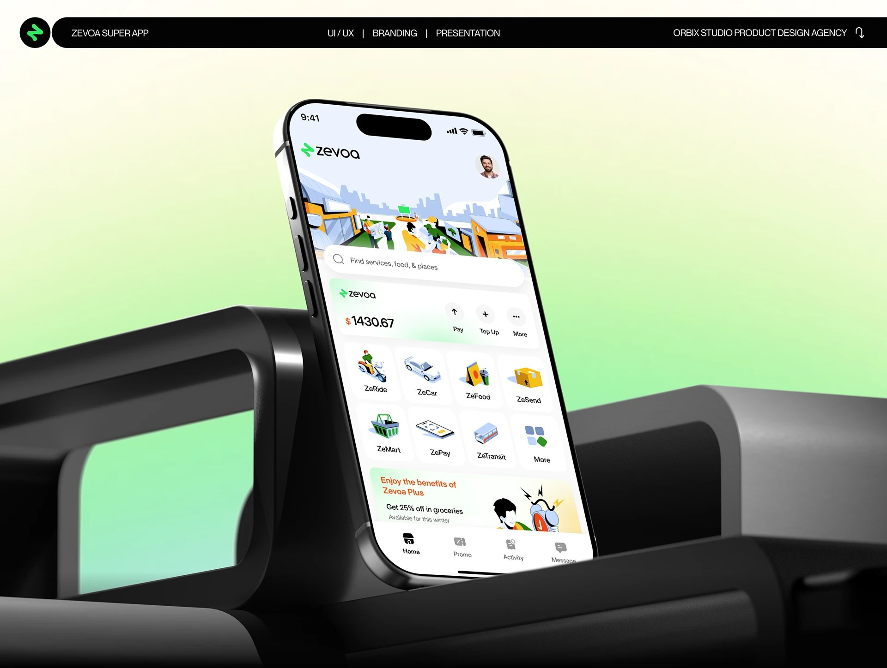
The brief
Zevoa set out to combine groceries, travel booking, package delivery, in-app payments and transportation into a single app UX: "a better product with better UX, we used a structured user-centered design process." The work was scoped and documented across a full five-month timeline from empathize through testing.
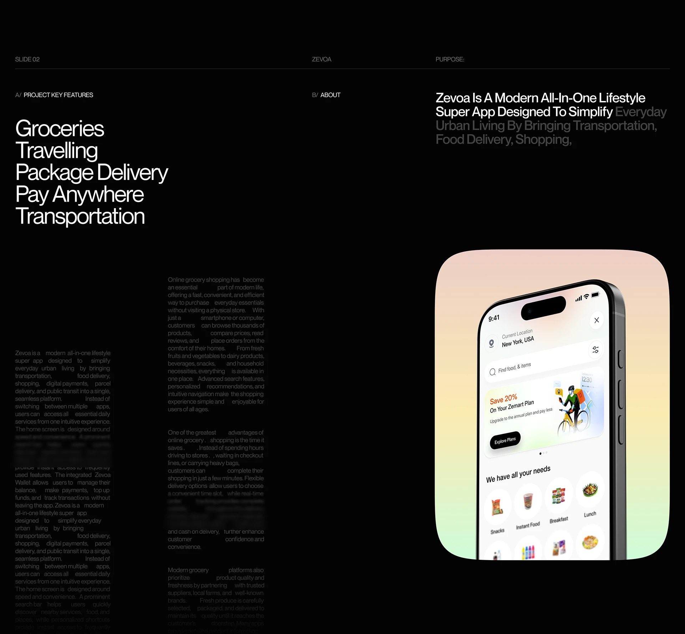
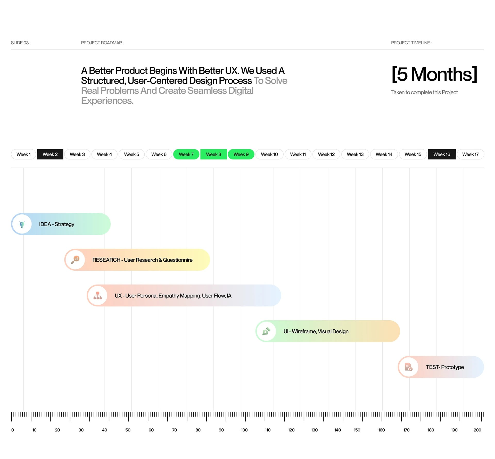
Problem & solution
The research framing was blunt: worldwide, nearly 29% of online adults order groceries online every week, yet mobile grocery shopping is slow: users struggle with product search, unclear categories and inconsistent delivery confirmation. The response was a clean mobile shopping app with clear categories, search, filters and personalized offers to help users shop faster.
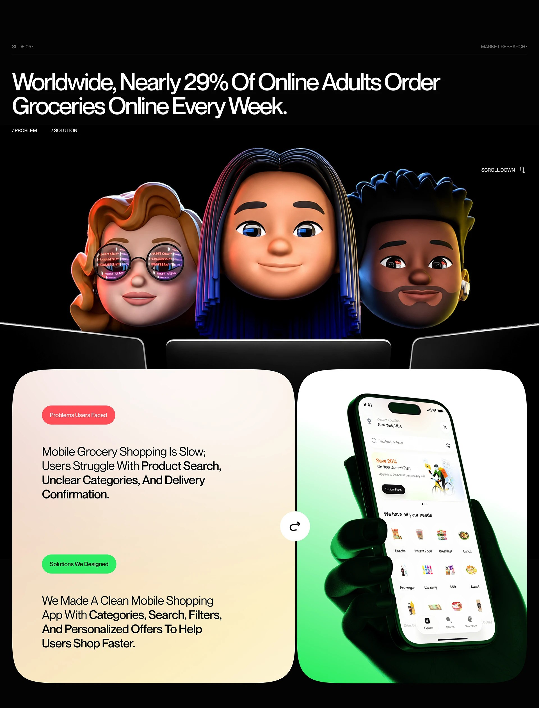
Research & persona
Research included mapping user emotions across the shopping journey and building a persona to ground design decisions in a specific set of goals and frustrations, explicitly labeled as a fictional character built from synthesized user-research patterns, not a real individual, which is the standard, transparent way UX teams document persona work.
![Zevoa persona slide explicitly labeled '[Fictional Character]': Tatiana Bator, 27-year-old Marketing Executive, with a description of her grocery shopping struggles and the statement that every successful design begins with understanding users' goals, behaviors, motivations and challenges.](img/zevoa/final-persona-fictional.jpg)
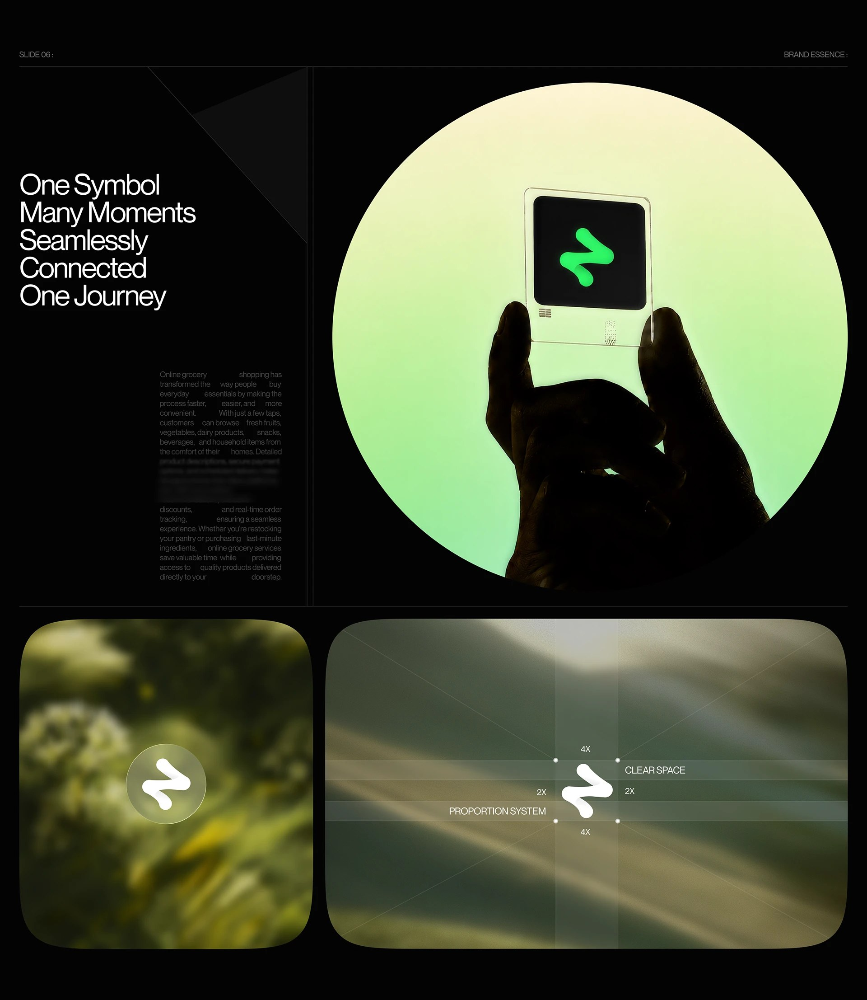
Design system & wireframes
The visual system is a deliberately dark, neon-green-accented UI: Inter Display for typography, a documented color system, and a consistent iconography set, built to feel premium and app-native rather than like a typical light-mode grocery storefront. Wireframes and a user-journey map for the full app flow (search, categories, cart, checkout) came before the final UI screens.
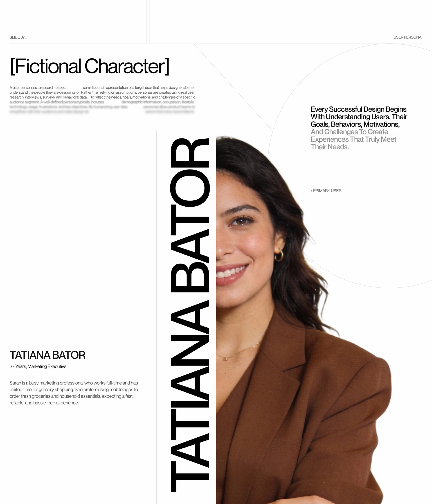
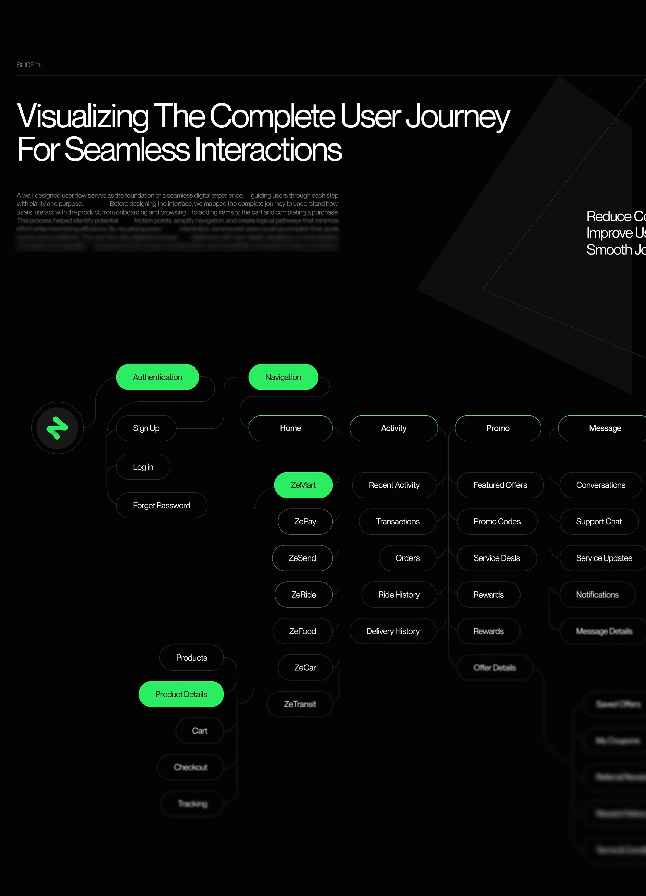
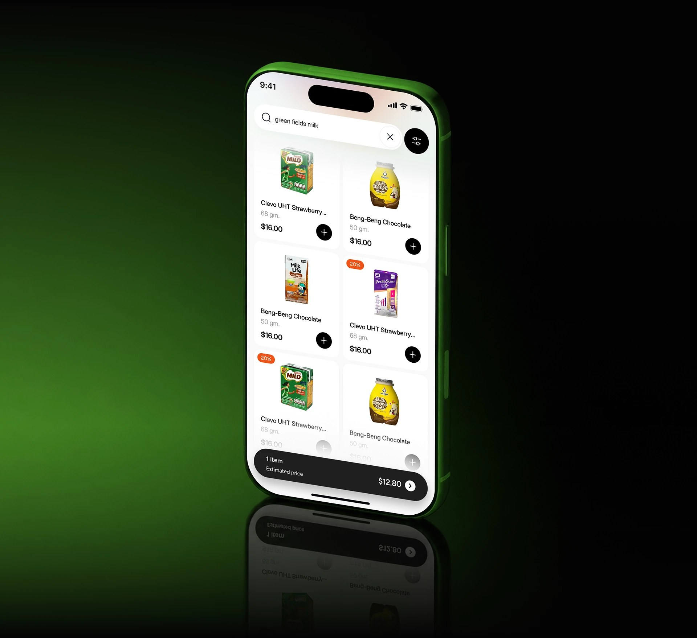
UI screens
The final UI runs from onboarding through to checkout: product browsing and search, a product detail screen, a cart, and the full onboarding/login/account-creation flow with illustrated supporting screens, all carried in the same dark, neon-accented visual language.
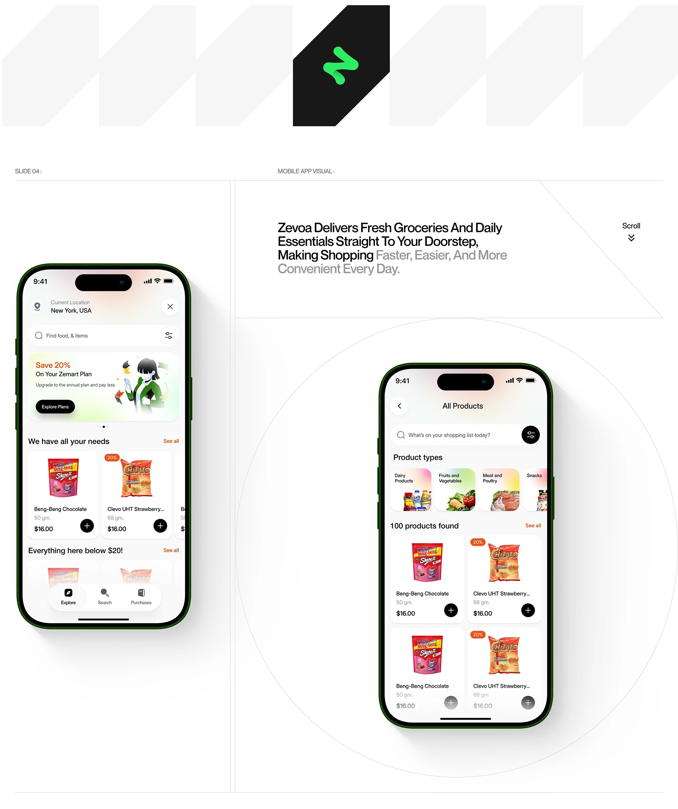
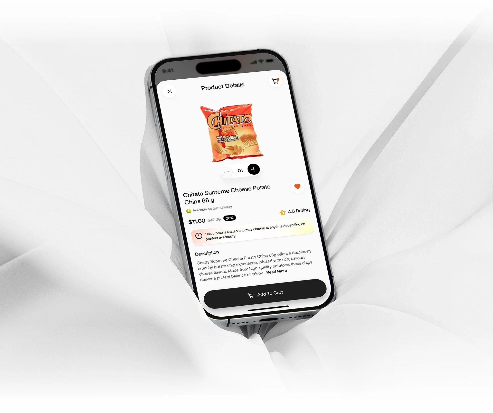
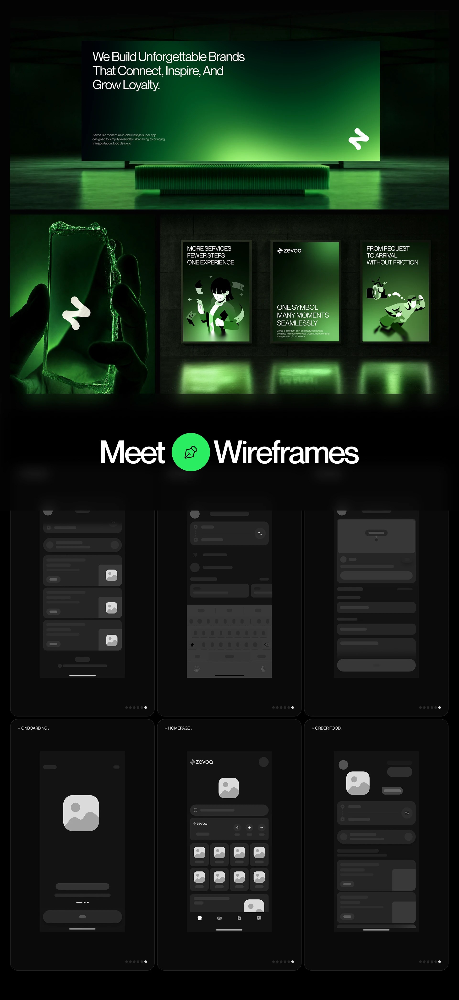
Marketing & testing
Beyond the app itself, the project included a marketing website, promo and voucher screens, and a "Testing Real Experiences, Improving Every Interaction" research pass: quantified usability metrics covering checkout clarity and interaction success, plus a reported results screen citing a 96% figure and faster delivery decisions.
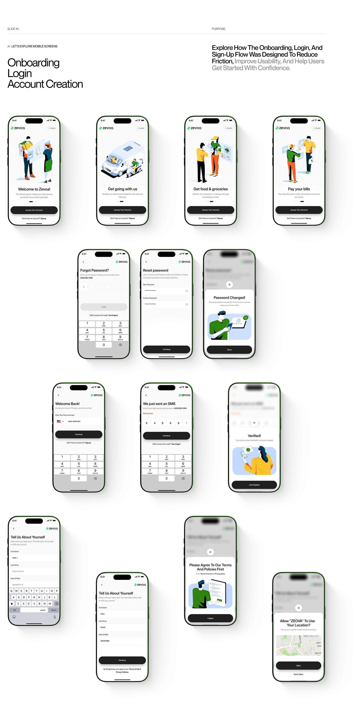
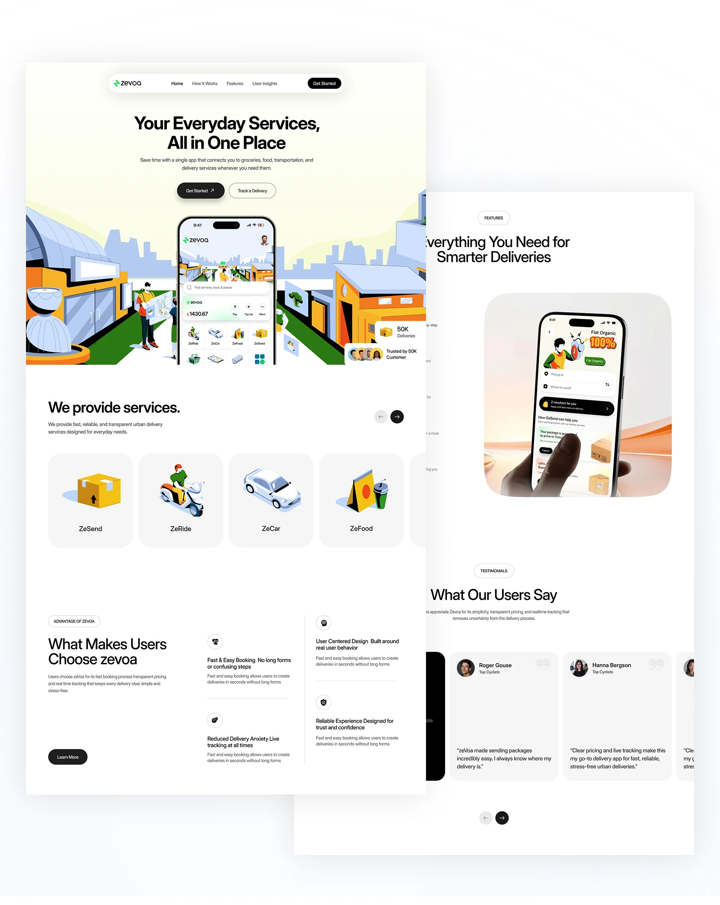
Outcome
A fully documented super-app concept, from a quantified grocery-shopping problem through a fictional persona, empathy mapping, wireframes and a complete dark UI system, to a companion marketing site and reported usability results.
The real design bet here was scope: proving that groceries, delivery and transportation can share one coherent UX instead of needing three separate apps, without the interface feeling like three products stitched together.